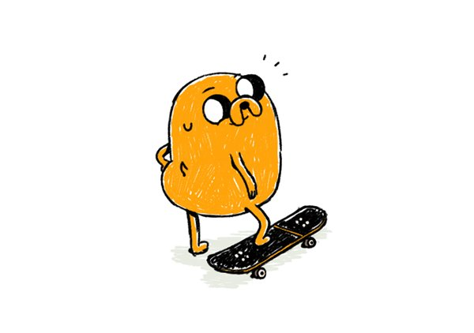

Jake the Dog

He's my favorite character from the Cartoon Network Show, "Adventure Time." I grew up with the show and I can say that the show also grew up. It adapted with its audience as time pasted. Not many shows can pull this off, but Adventure Time did it skillfully. Jake starts off as this goofy companion but as time goes on, he lays down words of wisdom and actually good advice. He becomes a father and in the end is a role model to all the characters in the show, and most importantly, me.